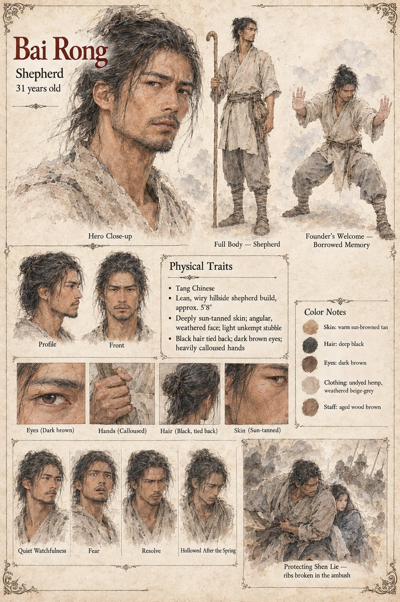

Bai Rong
Shepherd · unmarried, in debt to the county tax collector · 31 years old
Thirty-one, unmarried, and owing the county tax collector a sum he calculates will take another eleven years to clear. He climbs Mount Qingxuan for a ewe, since a ewe is worth more to him than his own dignity, and finds her standing at the water's edge. He drinks last and longest, with his face almost to the surface, and for three breaths feels nothing at all. Then the knowledge arrives, less like remembering than like realizing he has walked a road ten thousand times without once looking at it, and his hands, which had held nothing sharper than crooks and shears, find the Founder's Welcome, four days after another man died in the same posture at the same water.
He wants nothing more complicated than enough saved silver to see the capital's lantern festival once, a wish he has never told anyone, and he can no longer tell which of his wants are his own. At his mother's gate his hand puts a garrison-trained man on the ground in about four seconds, and the horror on his face convinces Deputy Song faster than the throw. In the clearing he fights as Kuang Zhi fought forty years earlier, and afterward finds that the hands that killed a young stranger feel entirely like his own, which frightens him more than the alternative. He survives the second submersion, keeps his own thirty-one years and gives back everything that was not his, goes home for eleven days to a forgiven debt, and leaves on the twelfth. He reaches the capital in time for that year's festival and stands in a crowd that does not know his name, thinking of nothing at all, which he will call the best evening he ever spent. His last words to Shen Lie are Go build something with whatever's left of him in you. I already know it's good enough. The chronicles will give him the crime of theft, and the valley a dragon. His sheet draws him lean and sun-tanned, hollowed after the spring.
“I don't always know which parts are mine.”
Appears In

Related Subjects


Related Records

The southern grazing bank, four days after the master died: Bai Rong rises from the water in a stance no shepherd was ever taught, weight low and both palms out, while Chen Wu and Fang stare at him with the flock grazing behind.

The tax collector's junior reaches for the loom and is put on the ground in about four seconds by Bai Rong, moved, as the manuscript has it, the way a door is moved; Deputy Song and a second man watch from the gate.

In the hollow three ridges east, Bai Rong turns from the dying fire into the Founder's Welcome as Shen Lie reaches the clearing with a rope for restraint and a blade for emergencies only.

What Bai Rong does in the clearing takes a few minutes and no wasted motion, the way the dead master fought forty years before; the songs will call it the shepherd's reckoning, and flatter it with a moral tidiness the minutes themselves did not have.